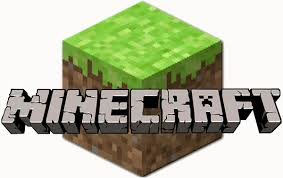

there is an achievement system, Gameplay is in the first-person perspective by default, but players have the option for third-person perspective.
The game world is composed of rough 3D objects—mainly cubes and fluids, and commonly called "blocks"—representing various m